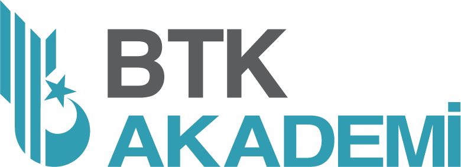

Sakarya Üniversitesi Yazılım Mühendisliği 3. sınıf öğrencisiyim. Java / Spring Boot ve C# / .NET ile mikroservis mimarisi, REST API ve katmanlı mimari üzerine projeler geliştiriyorum.
Sakarya Üniversitesi'nde Yazılım Mühendisliği 3. sınıf öğrencisiyim. En çok sevdiğim şey, bir fikrin çalışan bir ürüne dönüştüğü süreç: ihtiyacı anlamak, sistemi parçalarına ayırmak ve her parçayı sağlam kurmak.
Güçlü olduğum taraf backend. Bir servis çöktüğünde sistemin nasıl ayakta kalacağı gibi sorularla uğraşmayı seviyorum; test yazmak ve bir hatanın kök nedenini bulmak benim için işin bir parçası.
Java 21 ve Spring Boot ile tek başıma geliştirdiğim 7 mikroservisli bankacılık backend'i. Kafka, Redis, circuit breaker ve idempotent para transferleri; 13 container tek komutla ayağa kalkıyor.
Kaizen, 5S ve Andon süreçlerini dijitalleştiren Android uygulaması. Flutter mobil uygulamadan ASP.NET Core backend'e kadar uçtan uca geliştiriyorum.
Ankara'daki saha ekipleri için rota optimizasyonu yapan full stack uygulama.
Yönetim kurulu · Etkinlik departmanı
Sakarya Üniversitesi · 2026 – Devam ediyor
Kurumsal İlişkiler Sorumlusu
Sakarya Üniversitesi · 2025 – 2026
LUNA 9 takımı
Hackathon · 2026
IEEE
Hackathon · 2026
Yazılım Mühendisliği (Lisans) · 3. sınıf
Başvurum kabul edildi; yaklaşık üç ay süren çevrim içi eğitim dönemindeyim. Bu aşamada en başarılı olanlar yüz yüze eğitime ve 7 günlük BootCamp'e davet ediliyor.
Üretken yapay zekâ ve Meta'nın yapay zekâ araçlarıyla fikirden prototipe, dört modüllük program · AI Builders Türkiye · 27 Ekim – 6 Kasım 2026
BTK Akademi · Başarı sertifikaları

Staj fırsatları, projeler veya iş birliği teklifleri için e-posta ile ulaşabilirsiniz.
CV'yi indir ↓